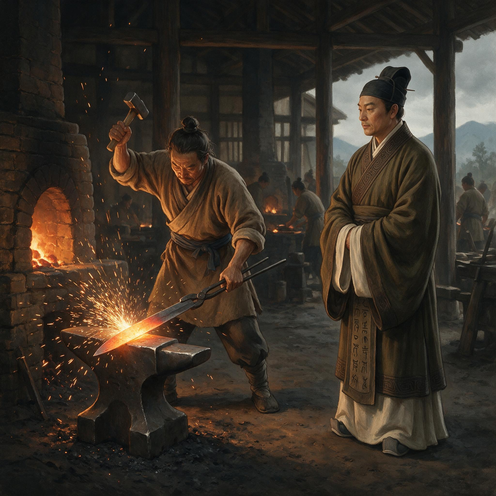

第 16 章
秘剑之光
铁锤声穿过尚方东坊的石墙，在院子里裂成三短一长的节奏。蔡伦站在廊下，没有立刻进去。那节奏里有一个极小的错位，像一枚铜钱在整齐排列的简牍间凸起。他辨出错的不是落锤的力道，也不是锤击的次序，而是夹剑的姿势。第三锤落下时，剑坯在砧面上轻轻歪了一下，像被谁在暗处推了一把。这点偏移逃不过他的耳朵。铁锤不会说谎，砧面也不会。它们只把人的失误原样吐出来，让懂得听的人听见。
匠人们没有停下。在尚方东坊，铁锤从不因一句话就停。它只在两种情况下停：一种是掌作的老匠抬起手，表示这一轮锻打该换面了；另一种是有人以错误的姿势夹住剑坯，逼得铁锤不得不停，否则剑脊就会在下一击里留下一道几乎无法挽回的暗伤。
蔡伦沿着炉光走过去，脚步在石砖上几乎没有声音。他的袍角扫过散落在地的碎铁末，像扫过一层晒干的墨粉。那柄尚未成形的剑还在砧上，青黑色剑身裹着一层薄薄的氧化皮，像蛇蜕去一半的皮。炭火从侧面照过来，把剑身中央照成一道细长的暗红，像烈日沉入云层前最后一线。
蔡伦用眼神找到掌锤的匠人，又找到夹剑的学徒。“剑身偏了。”他说。这一次他说得极短，短到只有这四个字落在铁锤停顿后的余响里。
掌锤的匠人抬头，是个五十上下的老头，额角有一道旧疤，像月牙嵌在汗泥里。他没有回嘴，只把锤头慢慢放低，等着。
蔡伦走到学徒身后，右手按在学徒颤动的腕上，向前推了半寸。“再翻。”他说。学徒照做了。剑坯在砧上翻过一面，露出一道不为人注意的暗纹。那纹路从剑身中段斜向刃口，像是折叠锻打时留下的夹灰。
蔡伦退了半步，看了片刻，说：“这一面别急着打，先回火。”他转向掌锤匠人：“今天的炭心太生，再鼓三次风，把炉温匀开。”匠人点了点头，没有说话，只把锤子重新握紧。
这不是尚方令第一次在东坊出现。尚方署上下都清楚，这位龙亭侯不喜欢坐在署中听丞吏报数。他来得越来越勤，有时在第一缕炉烟升起前就到，有时在最后一盏灯将灭时仍不走。他看泥范，看炭色，看水流，看那些被锤打得发亮又迅速氧化的剑身。匠人中间私下说，龙亭侯的眼，是铁官家里养出来的。
蔡伦知道这套判断从何而来。耒阳的铁矿坑道、炒铁炉、鼓风皮囊、钳床上的锻打，他闭着眼也记得。父亲在铁官作坊里走动时总是先听声音，再看火色。他不记得父亲对自己说过多少冶铁的道理，反而记得父亲站在炉前的背影，记得那只按在风囊上的手。有些知识不在言语里，而在手与铁之间。
那些年他以为自己会成为父亲那样的铁官匠，后来又以为自己会死在宫廷内署的某一处廊角。他从未料到，有朝一日这些从铁灰与锤声中长出来的辨识力，会在洛阳宫墙内的尚方署重新落地，成为他手中最不被提及的底牌。
这与造纸术不同。纸是柔性的，它的力量在于承载，在于薄薄一层纤维之间的秩序与耐心。剑是刚性的，它的力量在于破坏，在于一击之下把秩序劈开。后世学者凌纯声曾指出，蔡伦改良造纸术的创新源流，或许受到南洋群岛族群树皮布工艺的启发——他将古代丝质纸的制作技法，与树皮布纸的材料学原理相融合，实现了从动物性原料向植物纤维造纸的转变。这种跨越与融合的思维，与他此刻在尚方署将铁官冶铸经验迁移到皇家兵器制造中的逻辑，竟有某种隐秘的同构。
然而此刻蔡伦站在东坊深处，闻着木炭、铁锈与皮囊的气味，却觉得两者在骨子里是同一种技艺——都是把混杂之物拆解，再在捶打与火候中重新组织成另一种更坚硬、更均匀、更稳定的东西。纸的纤维与剑的纹理，一条一条，一层一层，在各自的尺度上趋向同一件事：让材料的内在结构承受住将要落在它身上的力。
剑坯仍在砧上被反复折叠。一个从民间征入尚方的匠户不太明白，为什么每次折叠都要更换锤击的角度；蔡伦知道。折叠的角度若一直不变，锻打出的纹理便会倾斜，在淬火时留下一道看不见的脆弱线。那不是表面的瑕疵，是藏在剑骨里的裂缝。表层再亮、再锋利，一剑下去也会折。
这种裂缝最可怕的地方在于，它在被铸成之前毫无征兆，在入库验收时也不一定显现。只有等到某一天，持剑者在某种特定的角度下发力，它才会突然断开。蔡伦不能让这样的剑离开尚方署，更不能让它成为皇家兵器。这就是秘剑与其他兵器的分野。民间铁匠铺用铁也有标准，但那是买卖的标准：能劈柴，能宰牲，能挂在腰间往来乡里，便算好铁。
尚方秘剑不是买卖。它供给的是皇家仪仗、宫门宿卫，甚至皇帝佩器的试制。它的硬度、韧性与锋利必须同时抵达，不允许偏废任何一项。剑身太硬则脆，太韧则钝，太利则薄。秘剑之秘，正在于它从第一锤起就必须藏住一种几乎不可见的均衡。这种均衡无法靠一次淬火获得，也无法靠一道磨砺获得。它必须在每一次折叠、每一次回火、每一次看似重复的捶打中一点点累积。谁若在半途松手，前功尽弃。
蔡伦命人把已经完成的几柄剑取来，一字排在东坊西墙的条案上。他不用手指去试刃，只让匠人用一块半干的麻布沿着剑刃平拭。麻布经过第一柄时轻微一滞，第二柄顺滑而过，第三柄在离开刃口时留下一条极细的毛边。蔡伦指着第三柄说：“这柄再磨一轮，但不要动锋线。”他又指向第一柄：“锋口有崩卷，回炉退火，重做。”
匠人小心翼翼地取走条案上的剑，有人抬起眼皮看蔡伦，又迅速低下头。东坊里的温度很高，炭火把每个人的脸都烤成一种沉沉的赭色。没有人问为什么。蔡伦也不解释。
他当然知道，这些判断没法在一道命令里写成清楚的程序。铁的火候、折叠的次数、淬火的时机、水与油的比例、回火的时间，全都依赖对一个瞬间的判断。
但尚方署不能永远依赖一个人的眼睛。他需要一套标准，把瞬间的判断从一个人的手上抽出来，放进可以被重复、被执行、被检核的工序里。否则，尚方署的秘剑制造就只是几个老匠人的个人手艺，而不是皇家的制度能力。个人手艺会死，会老，会离开；制度能力却应当留下。
这已经不是他第一次面对这个问题。十四年前，在石臼房里，他也曾面对同样的问题。麻皮要浸多久，旧布要撕多碎，舂捣要到什么程度，浆料怎样才算均匀。那时没有一个现成的答案，他只能在一次次失败里寻找可以固定的界限。后来纸成了，那些界限被办法传下去，尚方匠户才能在不同季节、不同批次里舂出大致一致的纸浆。
现在轮到剑了。纸与剑，一样要被人复制，一样要离开最初发明它的那双手。在尚方署，剑与纸走的是两条不同的制造路径，却共用同一套管理逻辑。
造纸的流程被拆成选料、浸沤、舂捣、抄捞、压榨、晾干，每道工序都有专人负责，成品在抄帘上显出什么纹路，在压榨后达到什么厚度，都渐渐有了可循的格式。秘剑制造同样被拆成选铁、折叠、成形、磨刃、装配、刻铭，但每一道工序背后的火候判断，仍然大半藏在老匠人的手指、耳朵和眼力里。蔡伦要做的，是把其中可以被固定下来的部分拉出来，变成尚方署共享的规矩。比如铁的来路与批次如何标记，折叠的次数如何登记，淬火所用的水从哪口井取、温度在冬夏之间如何调整。他知道有些判断终究无法成文，但成文的部分越多，尚方署就越不会被一两个老工匠的故去掏空。
东坊的屋檐下挂着一排铁牌，每一枚上有简短的刻字，记录着近日在造的器物。蔡伦走过去，把其中一枚翻过来，借着炉火看背面的炭痕。他没有说话，只将铁牌放回原处。
这翻牌的动作，半日里已经做了三次。每一次翻，都是在核对一件事：人和活计对得上，料和时间对得上。若有一处对不上，那铁牌背后的整个流程就值得重看。
申时之后，尚方丞抱来一摞竹简，是从少府转来的料库文移。蔡伦走到作坊外挑廊下，看着简片在案上摊开，每一片都写着采办某项物料的数目、来处、运送人的名字和入库日期。竹简边缘做得不甚整齐，

尚方工坊内锻造秘剑
AI 生成插图，非史实影像。
系绳也有几处新换，一看便知是在仓促之间编成的。他读得不快，偶尔用指尖点着某一行，略去冗长的套语，只提取有用的信息。读到第三片时，他忽然问：“太湖铁料是谁签收？”
尚方丞愣了一下，低头翻检，说：“是东坊吕主事。”蔡伦把那一简抽出来，横在案边，说：“回去查，库账上写的是十七车，这里写十九车。”尚方丞脸色微变，上前细看，果然两处车数不同。他慌忙说：“下吏这就去核。”蔡伦没有看他，只把那片竹简轻轻一推，让它滑回简堆边缘，发出一声脆响。
这只是料库文移里最不起眼的一处矛盾。尚方署每年经手的铁、铜、锡、木、漆、革、丝、麻，数目庞杂，稍有失查，便有人从中蚀耗。蔡伦知道，自己不能把每一份文移都这样逐字核对，但至少在最要紧的几项物料上——尤其是秘剑所需的铁料和铜锡——他不能让底下的人形成一种印象，以为龙亭侯的眼睛只盯着造纸房，不盯料库。
料库是一道门。门若松了，偷进去的就不只是几车铁，而是整个尚方署的规矩。这就是权力慢慢长出来的方式。它不在官秩的品级里，在谁会去找尚方丞追问两车铁的差数。它不是尚方令三个字带来的，而是当他说出“回去查”的时候，接令的人知道不查不行。这才是比侯印更沉的东西。
侯印可以放在柜子里，可以不去看它，可以装作它不存在。但尚方署里的人知道，哪个人在午后会沿着哪条廊子走到哪间作坊门口，会在哪一步停下，会问哪一句。那些脚步和目光，比任何官印都更真实地标出权力的边界。
蔡伦想到那只锁在柜中的金印。他原以为那会是一个终结——封侯之后，他或许可以稍微退到纸房里，少沾手这些琐碎的兵刃与料账。但他很快发觉，从金印锁进柜子的那天起，更不能退了。士大夫已经在朝议中把“龙亭侯”称作异数，说他“以刀锯之余而纡青紫”。话虽传得支离破碎，但意思明确：宦官得侯，非旧例，不可示天下。他们盯着的，不只是一颗金印，也是那颗金印背后的人。
若他此刻只守着纸坊，便能安稳吗？不会。尚方署每一炉炭火，都能被说成逾制；每一批甲胄兵器，都能被说成借以邀宠。只有把整套制造链条握得足够紧，他才不会被一纸弹章轻易拔掉。
这是蔡伦心里想得很清楚的事。他不想争，但也不打算把自己变成一个只有爵号而毫无实际依凭的人。金印可以锁在柜中，但尚方署的炉火不能熄。
炉火一熄，他就真的只剩下一颗被士大夫指指点点的侯印了。天色暗下来之后，东坊里的炉口仍亮着，像几头伏在黑暗中的兽。
蔡伦让人把白日锻打的三柄剑坯取来，并排放在灯前。剑坯已经过第一轮粗磨，表面泛着幽青的光，像刚出水的鱼背。他用一块炭条在剑身靠近柄处轻轻点了三下，留下三个几乎看不清的灰点。
匠人围过来，知道龙亭侯要亲自说哪一柄该做什么改动。第一柄根部偏软，第二柄锋线中段有一处塌陷，第三柄双手握柄时重心偏前。蔡伦没用任何仪器的刻度，只以手指压在剑身不同位置，让匠人向后退两步，看光在剑面上的流转。灯光下，每一柄剑身都映出一团跳动的火焰，似有似无地浮在铁的表面。
蔡伦忽然把其中一柄竖直抬起，用指节在剑脊轻轻一叩。声音短促，像在深井里投下一粒石子。众人屏息。余音尚未散尽，蔡伦已经把剑放下，说：“这柄，可以送第二炉。”
他说话的声音很低，像只是对着那柄剑说。但东坊的每个匠人都听见了。第二炉是最后一道锻打。所谓“秘剑”，并非每一柄都能走到这里。十柄剑坯里，能进入第二炉的也许不过三四。第二炉不是更高的温度，而是更慢的火，更少的锤击，更长的停顿。匠人必须让剑身在极窄的湿度与炭火之间反复吞吐，使它一点一点抵达那种既坚硬又不脆裂的临界状态。换句话说，第二炉不打力气，打的是耐心。
蔡伦对这一道工序介入最深，因为他知道，真正决定剑之成败的，往往不是重锤落下的一瞬间，而是重锤没有落下的那些片刻。那些片刻里，铁在火中自己重新组织，把前一阶段积累的应力一条一条松开。人若不能等，铁就不会稳。
有一夜，蔡伦在东坊守到子时。第二炉的剑已经放入炭中，匠人轮班鼓风，火舌在炉膛里忽明忽暗。一个年轻匠人打盹，风量有一瞬弱了下去。蔡伦没有斥责，只走过去，替他把皮囊压了一下。年轻匠人惊醒，脸色煞白，以为要受重罚。蔡伦只说：“去睡。”匠人不敢动。
蔡伦又说：“明日还有一夜，现在不去，明日更撑不住。”他的语气平静得像在说火候，不像在说人。年轻匠人最终退了出去，走几步又回头，看见蔡伦坐在炉旁的小杌上，背影被火光拉得很大。
尚方署的物事，不论纸还是剑，最终都绕不开一个关于人的问题：谁能连续守十夜而不出错？谁能在一千次锤击之后还判断得了半寸偏差？谁能在一片竹简和另一片竹简之间，看见两个车数的不同？蔡伦知道，答案从来不是某一个人。所以他才要把工序、账目、标准一一拆开，让它们互为约束。剑身铸的是铁，但他铸的是另一种更不可见的东西。那东西没有刃，却能让剑刃更稳。
几天后的清晨，三柄经过第二炉锻打、粗磨与细磨的秘剑被送上验收案。剑鞘、佩饰尚未安装，只有光裸的剑身和简陋的革柄。蔡伦令人取来一块风干的革片，贴在案角。他试剑的方法一直如此：不用活物，不用木桩，只用革。他握住剑柄，将剑从案上提起，手腕在极短的距离内一转，剑刃落下。革片应声裂开，切口平直，像用刀在竹简上下了一记。其他两柄依次试过，有一柄在第二层革上滞了分毫，第三柄剑刃在收势时离开革面过高，带起一缕风。蔡伦放下剑，说：“两柄可用，一柄回修。”
这一刻，尚方东坊里静得只能听见炉中余炭的细响。匠人们知道，这不是一场展示，而是一次验收。那两柄被认可的秘剑，将被送入库中，等待后续装饰与刻铭。那一柄被退回的剑，则要再经历一次火与水的循环，重新回到它尚未抵抗住的临界点。
蔡伦没有夸赞，也没有批评。他只是让事实落下来。事实落在那里，比任何训诫都更清楚。
然而东坊之外，有另一双眼睛正在注视这个清晨。尚方署外人不知是谁在晨光将明时把消息传了出去。
几天之后，宫中有一种说法悄悄散开：龙亭侯蔡伦不仅以纸市宠，今又督造秘剑，以利器邀欢。话是从哪里起的，无法追溯。只知或明或暗地，有人把“纸”与“剑”联在一起说，称其“以柔媚蔽主，以刚锋防身”。
这些话传到蔡伦耳中时，他正在尚方署西南角的小院里看一批新的剑模。他没有抬头，只把剑模拿在手里翻了两面，说：“知道了。”
知道就是知道。不必多问，不必回击。他清楚这类流言的目标不在事实，而在位置。要把尚方令从督造御用器物的位子上请下来，最方便的办法，就是让他和那些器物之间不再安全——让纸不再是承卷之物，而变成“曲意悦上”的媚术；让剑不再有卫护之责，而变成“阴养利器”的嫌疑。词汇不变，语气一变，功业就能被念成罪过。
这恰恰是蔡伦最熟悉的那类危险。他不是第一次被中黄门监视，也不是第一次被士人指为异类。
但这一次与以往都有不同。因为他已经不只是被监视、被讥评。他手里有实际的调度权，有工匠的听命，有料库的账目，有成品入库的验收。对一个宦官来说，这叫权重；对政敌来说，这叫威胁。
蔡伦看着手中的剑模，指尖摸到砂粒在铜面留下的细小孔洞。他知道这些孔洞在铸印之后会在剑身形成极细的纹理，像某种难以察觉的呼吸。他心里忽然生出一个极清晰的判断：这些人现在只是说“以利器邀欢”，下一步便会说“私蓄利器，意欲何为”。
到那时，他所建立的每一条验收规则、每一车铁料、每一柄入库秘剑，都会被重新解释。纸的功劳已经够大，剑的权力再大，叠加起来就超出了他们能够容忍的限度。
但他不能停。尚方署的炉火不会因为几句流言就熄灭。他的责任就是继续督造，继续验铁，继续使秘剑达到它应当达到的标准。若他稍一松手，首先折断的不会是剑，而是尚方署那群工匠对他的信任。那种信任一旦失去，就再也无法召回来。
日影移过小院的矮墙，落在蔡伦面前。他把剑模放下，回到东坊。接下来的半日，他一直守在捣浆房和东坊之间，来回走了三趟。一趟是为了纸浆的浓度，一趟是为了剑坯的回火时间，第三趟只是走，没有停留，像在确认两个作坊之间的脚步还属于自己。
尚方署的门禁开始有了一点变化。原先每日出入的料车只凭牌记，如今有时会有一个身穿黄衣的中黄门远远踱步，不近前，也不问话，只是站在槐树下看。匠人们觉得古怪，又不敢多看。只有尚方丞把这情形悄悄报给蔡伦，问是否要通文少府，请宫中明示。
附上的炉温记录并没有让蔡伦感到安心。相反，它使他想起元兴元年那卷纸从捣浆房送到御案上的旧事。那时纸还没有“蔡侯纸”的名字，只是一张略发黄、质地仍然粗疏的薄页。他把它铺在漆盘里，跪在殿外等待。皇帝接过后翻覆看了几遍，没有当场多说什么，只命尚方将造纸法的每一步写清，连同纸样一起发往州郡。后来郡国陆续有纸坊试制，太常、少府和宫中各署也开始用纸写短札。
蔡伦知道，那卷纸最大的意义并不在纸本身，而在皇帝从他身上看见了一种可被推广的才能。元初元年，朝廷封他为龙亭侯。宫外市井不知内署职掌，只看见一个宦者封侯，便顺着纸的名头，叫它“蔡侯纸”。
这个称呼传到洛阳时，已经不再单纯指纸。它把一个人和一种物牢牢捆在一起，功业越广，绳索越紧。
根据《后汉书·宦者列传》的记载，在古代，书籍和文档主要依靠竹简作为书写媒介。随后，质地轻柔的缣帛问世，但以缣帛造纸成本高昂，而竹简则显得笨重。因此，蔡伦致力于技术创新，转而使用树皮、破布、麻头和鱼网等廉价材料来生产纸张，这显著降低了造纸成本，为纸张的广泛使用创造了条件。在汉和帝元兴元年（105年），蔡伦将改进造纸术的成果呈报给皇帝。皇帝对蔡伦的才能大加赞赏，并下令将改进后的造纸技术推广至全国各地。
纸张案上的旧事，与眼前铁炉旁的新事在蔡伦心里叠在一起。秘剑监作原只是少府分下来的一道差遣，算不得显职。但自他重新梳理尚方东坊的采办、匠户和验收之后，这差遣已经变成了难以绕开的权力。每一车铁料从少府转到尚方，要经他的签；每一柄剑从砧上到库中，要经他的看；每一份料库文移的出入，也渐渐以他的追问为最后一道准线。三道门合成一处，便不再只是造剑，而是捏住皇家兵器从矿石到剑鞘的整条链子。
宫中流言已经把他和纸、剑捆在一起，说前者是邀宠，后者是防身。他们真正不安的是，一个宦者不仅有造纸之巧，还能执掌兵作之严。纸能传名，剑能生威，两样若都不可替代，便意味着他能同时进入内书与武备两种机密。这样的人即使无争权之心，也已经站在争权的道上。
因此他愈是感到四周的监视加多，就愈不肯松手。尚方署新的文移要求每一笔铁料还要府曹复核，他没有驳回，反而命人把炉温、折叠次数、试革结果和当值匠户都附在上面。
有人低声说，这样细录，往后每一日都成了明账，稍有差池，追责也追得极准。蔡伦没有直接回答，只合上其中一卷简册。在他看来，不录下来的差池才真正说不清楚。
事实上他明白，这套渐密的记录只会让他在尚方署的位置更难被替代，也更难被赦免。一个只凭手艺吃饭的匠人不会招致这种忌惮；一个让制度围绕着自己成形的宦者，才会。
第二炉里的剑坯仍在炭火中吞吐。蔡伦坐在靠近炉口的小杌上，把简册放在膝头，借着红光逐行看下去。他看到某处炉温低于前日，便将那一片抽出来，用炭条在边缘点了两下。窗外极远处又传来那双黄衣人的脚步声，比前些天更近，像靴底在干土上轻轻一磨。蔡伦没有起身，只把简册翻过一页。上面的栏线在火光里微微发亮，与他白日验过的剑脊一样，细密、笔直，带着一种不肯弯折的静。
他知道，这些文字与数字留下的不是功业，而是把柄。但他若不写，尚方署的秘剑就会退回几个老匠人的手中，随着他们的腕力一起老去。纸从元兴元年以后没有走回头路，剑也不能。他把简册重新卷好，搁在案角，朝第二炉走去。风囊还在响，皮子发出一声一声低哑的嘶鸣。炉膛深处，一柄剑坯已经烧成均匀的暗红，像被夜色含在口中的炭。蔡伦站在炉前，把简册的影子投在地上，恰好落在两炉之间。
蔡伦摇了摇头，说：“人家只是看，你文上去，反而给了话柄。”尚方丞退下时仍带着不安，但他明白，龙亭侯既这样说，自有他的道理。
这天黄昏，蔡伦独自走到东坊最僻的后围，那里存放着已经验收入库的秘剑。剑架有三层，剑身未加鞘，整齐地插在木格中，看不见剑刃，只有一排排柄部朝外。他看着那一排剑柄，忽然觉得自己也像其中一柄：被握在哪只手里，不是自己能决定的。决定得了的，只是不要在被需要的时候折断。他伸手碰了碰其中一柄剑的柄首。那里还未缠上绶带，光秃秃的铜柄凉得像井底的石。
就在他转身要走的时候，后围外传来极轻的脚步声。蔡伦没有回头。脚步声在门外停了一瞬，又慢慢远了。晚风里只留下一点若有若无的鞋底擦过尘土的声音。
那晚过后，尚方署的料库文移忽然更加繁琐起来。少府转来的新文要求，每一笔铁料入库，除尚方签收外，还须另报府曹核准。原先只需三天的文移，现在要七天。蔡伦没有反对。他在新的文移格式下面照常批注，只是让尚方丞把每日的炉温记录也一并附上。
他想：要看得更细，就让他们看。真正的秘密从来不属于文移，而属于铁与火之间那些必须亲临才能明白的东西。
然而他的心里也知道，这只是最初的一步。新文移像第一粒落在瓦上的雨点，不重，不急，甚至看不出痕迹。但天已经变了。远处的云层正在缓缓移来，把洛阳城西角的霞光一分一分吞没。
蔡伦站在尚方署的前庭，看着东坊方向腾起的烟。那不是纸房的烟，也不是铁炉的烟，而是整个尚方署在这座城里位置渐高的烟。有人会循着烟而来。
剑还在炉中，第二炉的火不能停。蔡伦转过身，重新走入那片暗红色的光里。这一次他走得很慢，像要把每一扇门、每一道墙、每一寸石砖与烟灰的气味都印在脚底。东坊里，铁锤声再次响起，不再有三短的错位，而是均匀、深长、一记接一记，像一个人把自己的影子打进铁中。